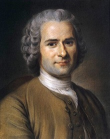

1712-1778 · The Enlightenment
← The philosophy map · About Rousseau
Does modern society make people better, or does it spoil something good in us?
You spend a weekend camping with no phone signal. By Sunday you feel calmer, kinder and more like yourself. Then you get home, check your messages, and the comparing and competing start again. Nearly 300 years ago, a writer from Geneva said this feeling tells us something important about society.
Read one part at a time. After each part, close your eyes and answer the question before you check.
Jean-Jacques Rousseau was born in Geneva in 1712, the son of a watchmaker. His mother died a few days after his birth. He never finished school and taught himself by reading. At fifteen he ran away from Geneva and wandered for years, working as a servant and a secretary, and giving music lessons. Later, in Paris, he became friends with some of the leading writers of the day.
How did Rousseau get his education?
In 1750 a French academy held an essay competition: have the arts and sciences made people better? Most writers would have said yes. Rousseau said no. He argued that civilisation makes people worse: more jealous, more false and more unequal. In nature, he believed, people are basically good and feel pity for others. Society teaches them to compare, compete and show off. He won the prize and suddenly became famous.
What surprising answer did Rousseau give in his prize essay?
In 1762 he published two books. The Social Contract begins with a famous line: 'Man is born free, and everywhere he is in chains.' It argues that laws are only fair if they come from the 'general will' of the people. Emile is about bringing up a child through experience, not just books. Both books were banned, and Rousseau had to flee. After his death, his ideas inspired the French Revolution.
According to The Social Contract, when are laws fair?
Each word is hidden in a sentence. Read it aloud and say what you think the bold word means. Then reveal and compare.
Rousseau would say some of these come from our natural goodness, and others are learned from society. Decide together, then reveal.
Now you: explain Rousseau's idea to a friend who has never heard of him. Speak for about a minute. Use the starters if they help.
You can send a twelve-year-old to one of two schools for a year. School A is a modern city school with laptops, exams and excellent results. School B is on a quiet island: no screens, no grades, and the children learn by building, farming and exploring, much as Rousseau suggested in Emile.
Tap two cards. Use the timer to keep going, and use at least two of the phrases above.
No looking back. Answer from memory first, then check.
Where does our belief in cause and effect come from, according to Hume?
What did Locke say about natural rights and government?
What did Machiavelli argue about how rulers should act?
What did Pyrrho think we should do, since we can't be sure of anything?
From memory, out loud. Then check.
1. What was Rousseau's big idea about people and society?
2. What is the 'general will'?
3. What did Rousseau argue in his famous prize essay of 1750?
4. What does 'inequality' mean? Give an example.